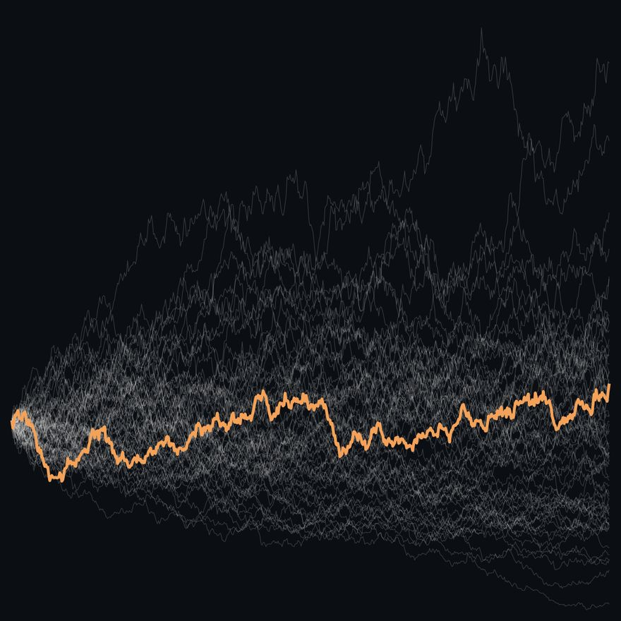
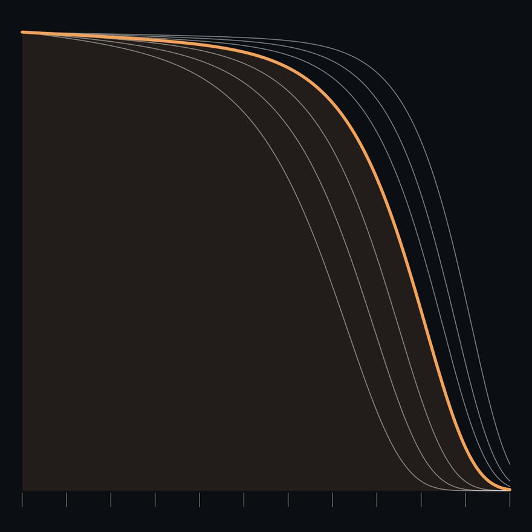
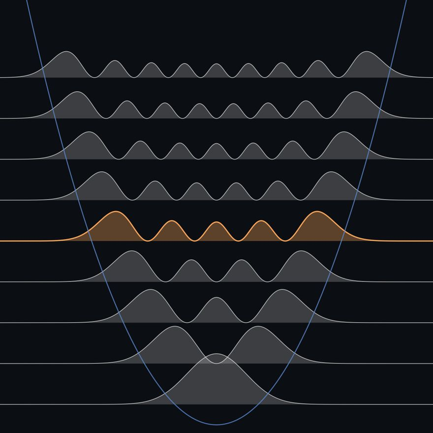
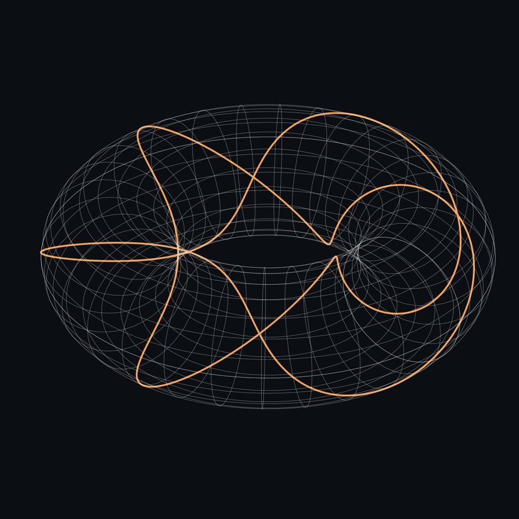
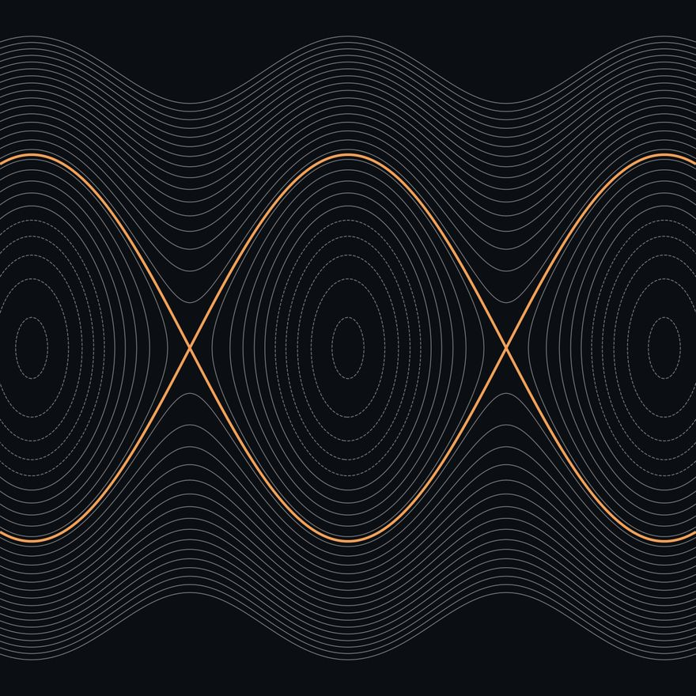

Coursework
Five years of mathematics, physics and actuarial science at the University of Toronto.
- Courses
- 46
- Physics
- 15
- Mathematics
- 14
- Actuarial science & statistics
- 10
- Electives
- 7
Year 5

- ACT351Loss Models: From Data to DecisionsChristopher Blier-Wong
- ACT352Statistical Methods for Actuarial LossXiaodong Lin
- ACT460Stochastic Methods for FinanceDena Firoozi
- APM421Mathematical Foundations of Quantum Mechanics and Quantum Information TheoryIsrael Michael Sigal
- APM446Applied Nonlinear EquationsCatherine Sulem
- APM462Nonlinear OptimizationAidan Backus
- PHY452Statistical MechanicsYong Baek Kim
- CLA231Introduction to Roman HistoryMichael Dewar
Year 4

- ACT240Mathematics of Investment & CreditChristopher Blier-Wong
- ACT245Financial Principles for Actuarial Science IXiaodong Lin
- ACT247Introductory Life ContingenciesBasil Singer
- ACT348Advanced Life Contingencies
- ACT370Financial Principles for Actuarial Science II
- STA257Probability and Statistics IJeffrey Rosenthal
- STA261Probability and Statistics IIJesse Gronsbell
- MAT357Foundations of Real AnalysisBenjamin Christopher Landon
- PHY456Quantum Mechanics IIArun Paramekanti
- PHY424Advanced Physics Laboratory
- PHL245Modern Symbolic LogicAlex Koo
Year 3

- PHY356Quantum Mechanics IJohn E. Sipe
- PHY365Quantum InformationDaniel James
- PHY354Advanced Classical MechanicsMichael Luke
- PHY350Electromagnetic TheorySajeev John
- PHY324Practical Physics IIBrian Wilson
- MAT367Differential GeometryWenyu Pan
- MAT354Complex Analysis IWenyu Pan
- MAT351Partial Differential EquationsCatherine Sulem
- BIO120Adaptation & Biodiversity
Year 2

- MAT257Analysis IISpyros Alexakis
- MAT267Advanced Ordinary Differential Equations
- MAT327TopologyAlexander Nabutovsky
- MAT295Independent Reading in MathGeorge Elliot
- PHY250Electricity & MagnetismNicolas Grisouard
- PHY252Thermal PhysicsStephen Julian
- PHY254Classical MechanicsNicolas Grisouard
- PHY256Introduction to Quantum MechanicsAephraim M. Steinberg
- PHY224Practical Physics IChristopher Lee
- ENG237Science Fiction
- PHL232Epistemology & Metaphysics
Year 1

- MAT157Analysis IStephen Kudla
- MAT223Linear Algebra I
- MAT224Linear Algebra II
- PHY151Foundations of Physics IBrian Wilson
- PHY152Foundations of Physics IIPaul Kushner
- CSC148Introduction to Computer Science
- PHL271Law & Morality